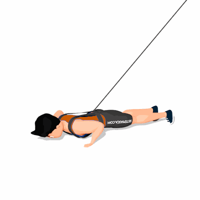

Flexão Explosiva com Tração Elástica

Exercício de resistência elástica realizado para fortalecimento e hipertrofia da região dos peitorais.
Ficha Técnica
Tipo: Funcional
Grupo Muscular: Peito
Aparelho: Nenhum
Músculos: Nenhum
Como realizar
- Prenda o colete de tração elástica em seu tronco;
- Fique na posição de flexão com as mãos levemente mais afastadas que a largura dos ombros. Seu corpo deve formar uma linha reta desde os tornozelos até a cabeça;
- Flexione os cotovelos e abaixe o corpo até que seu tórax quase encoste no chão;
- Impulsione-se para cima explosivamente, de forma que suas mãos saiam do chão;
- Volte ao chão com seus braços estendidos e retorne à posição inicial.
 RC STORE
RC STORE